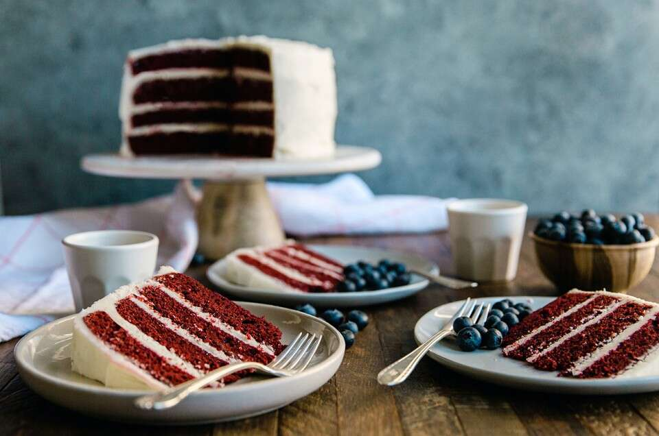

How to make a Red Velvet cake

Ingredients
- 8 tablespoons (113g) unsalted butter, at room temperature, at least 65°F
- 1 1/3 cups (266g) granulated sugar
- 2 large eggs, at room temperature
- 2 tablespoons (28g) liquid red food color
- 3 tablespoons (14g) Dutch-process cocoa
- 1 teaspoon salt
- 2 1 teaspoon baking soda
- 1 teaspoon cider vinegar or white vinegar
- 2 1/4 cups (270g) King Arthur Unbleached All-Purpose Flour
- 1 cup (227g) buttermilk, or low-fat plain (not Greek) yogurt, at room temperature
Instructions
- To make the cake: Preheat the oven to 350°F. Lightly grease two 8" pans, then line the bottom with parchment
rounds, and lightly grease the parchment, too.
- Beat the butter and sugar until well combined. Add the eggs one at a time, beating after each addition.
- Stir in the food color, cocoa, salt, baking soda, and vinegar.
- Beat in the flour alternately with the buttermilk or yogurt, beginning and ending with the flour. The point
is to keep the mixture smooth, which is more easily accomplished if you add the flour and yogurt in
portions.
- Scoop the stiff batter into the pans; wet your fingers or a rubber spatula, and spread it to cover the
bottom of the pans, smoothing the top a bit in the process.
- Bake the cakes for 25 to 30 minutes, until the tops feel set and a cake tester inserted into the center
comes out clean.
- Remove the cakes from the oven, and allow them to cool for 10 minutes before turning them out of the pans
onto a rack to cool completely.